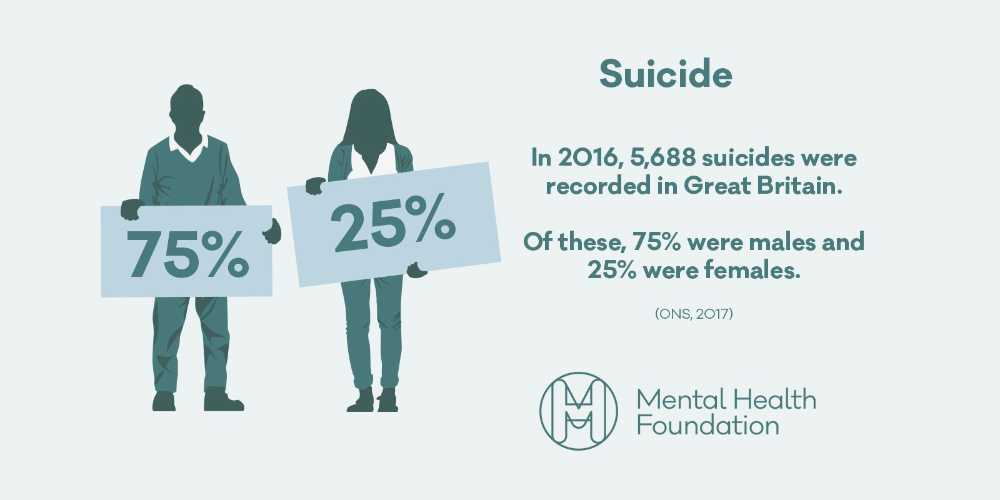

Mental Health in Men
Let us help you!
• Just over three out of four suicides (76%) are by men and suicide is the biggest cause of death for men under 35.
• 12.5% of men in the UK are suffering from one of the common mental health disorders.
• Men are nearly three times more likely than women to become alcohol dependent (8.7% of men are alcohol dependent compared to 3.3% of women)
• Men are more likely to use (and die from) illegal drugs.
• Men are less likely to access psychological therapies than women. Only 36% of referrals to IAPT (Increasing Access to Psychological Therapies) are men.
• Every week, 1 in 6 adults experiences a common mental health problem, such as anxiety or depression and 1 in 5 adults has considered taking their own life at some point.
Just these states alone are extremely terrifying and stomach turning that men are seen as alpha males and believe they can overcome any mental problem inside the heads by themselves, eventually loosing their purpose in life.
